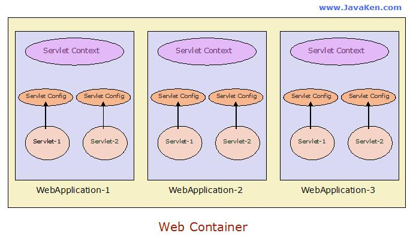
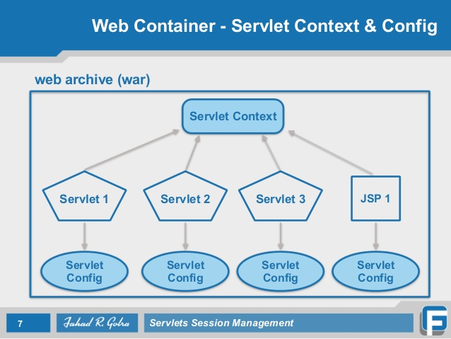
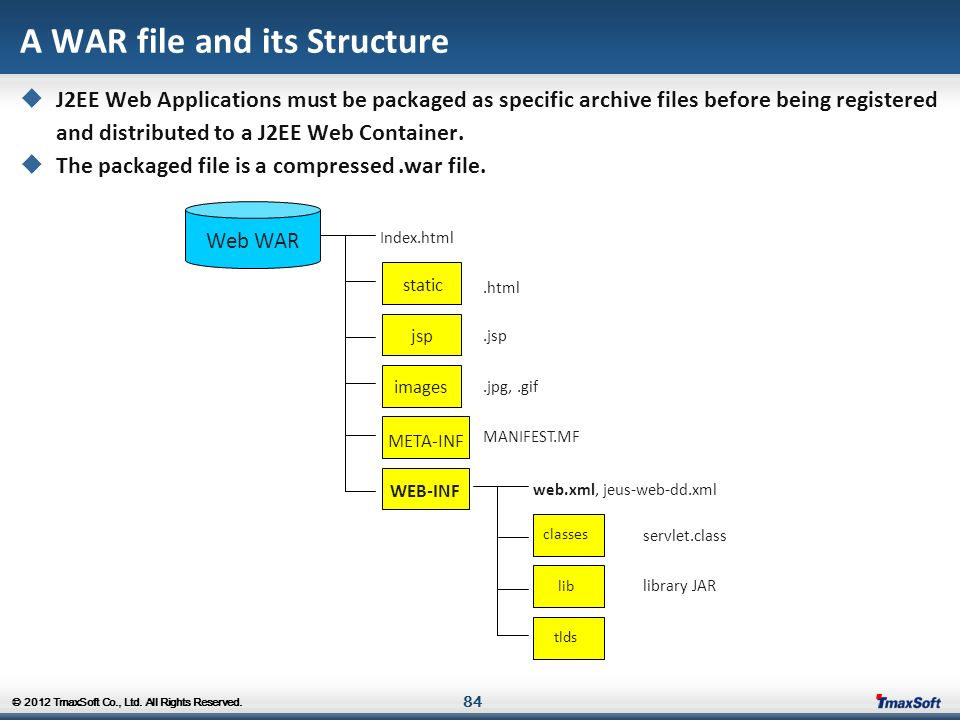
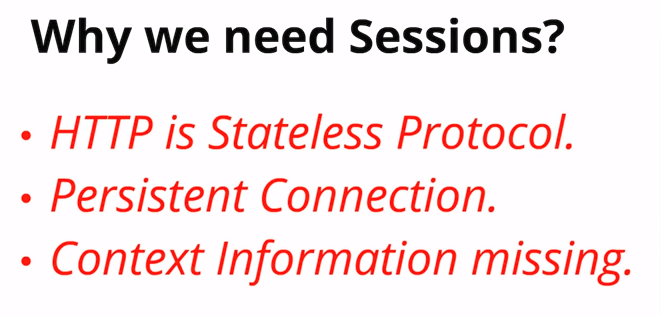

A servlet is a Java™ technology-based Web component, managed by a container, that generates dynamic content.
The two classes in the Java Servlet API that implement the Servlet interface are GenericServlet and HttpServlet.
The basic Servlet interface defines a service method for handling client requests. This method is called for each request that the servlet container routes to an instance of a servlet.
The HttpServlet abstract subclass adds additional methods beyond the basic Servlet interface that are automatically called by the service method in the HttpServlet class to aid in processing HTTP-based requests. These methods are:
doGet for handling HTTP GET requestsdoPost for handling HTTP POST requestsdoPut for handling HTTP PUTdoDelete for handling HTTP DELETE requestsdoHead for handling HTTP HEAD requestsdoOptions for handling HTTP OPTIONS requestsdoTrace for handling HTTP TRACE requestsA servlet is managed through a well defined life cycle that defines how it is loaded and instantiated, is initialized, handles requests from clients, and is taken out of service. This life cycle is expressed in the API by the init, service, and destroy methods of the javax.servlet.Servlet interface that all servlets must implement directly or indirectly through the GenericServlet or HttpServlet abstract classes.
The servlet container is responsible for loading and instantiating servlets. The loading and instantiation can occur when the container is started, or delayed until the container determines the servlet is needed to service a request.
The servlet container loads the servlet class using normal Java class loading facilities. The loading may be from a local file system, a remote file system, or other network services.
The container initializes the servlet instance by calling the init method of the Servlet interface with a unique (per servlet declaration) object implementing the ServletConfig interface. This configuration object allows the servlet to access name-value initialization parameters from the Web application’s configuration information. The configuration object also gives the servlet access to an object (implementing the ServletContext interface) that describes the servlet’s runtime environment.
After a servlet is properly initialized, the servlet container may use it to handle client requests. Requests are represented by request objects of type ServletRequest. The servlet fills out response to requests by calling methods of a provided object of type ServletResponse. These objects are passed as parameters to the service method of the Servlet interface.
In the case of an HTTP request, the objects provided by the container are of types HttpServletRequest and HttpServletResponse.
If the servlet container provides multipart/form-data processing, the data is made available through the following methods in HttpServletRequest:
public Collection<Part> getParts()public Part getPart(String name)If the servlet container does not provide the multi-part/form-data processing, the data will be available through the HttpServletReuqest.getInputStream.
The default encoding of a request the container uses to create the request reader and parse POST data must be “ISO-8859-1” if none has been specified by the client request. However, in order to indicate to the developer, in this case, the failure of the client to send a character encoding, the container returns null from the getCharacterEncoding method.
If the client hasn’t set character encoding and the request data is encoded with a different encoding than the default as described above, breakage can occur. To remedy this situation, a new method setCharacterEncoding(String enc) has been added to the ServletRequest interface. Developers can override the character encoding supplied by the container by calling this method. It must be called prior to parsing any post data or reading any input from the request.
The servlet container is a part of a Web server or application server that provides the network services over which requests and responses are sent, decodes MIME-based requests, and formats MIME-based responses. A servlet container also contains and manages servlets through their lifecycle.
javax.servlet.ServletContextjavax.servlet.ServletContext 是用来充当媒人角色，用来实现的:

The Container Provider is responsible for providing an implementation of the ServletContext interface in the servlet container. Using the ServletContext object, a servlet can log events, obtain URL references to resources, and set and store attributes that other servlets in the context can access.
The following methods of the ServletContext interface allow the servlet access to context initialization parameters associated with a Web application as specified by the Application Developer in the deployment descriptor:
getInitParametergetInitParameterNamesThe following methods are added to ServletContext since Servlet 3.0 to enable programmatic definition of servlets, filters and the url pattern that they map to.
Programmatically adding and configuring Servlets:
The return value of this method is a ServletRegistration or a ServletRegistration.Dynamic object which further allows you to setup the other parameters of the servlet like init-params, url-mappings etc.
addServlet(String servletName, String className)Programmatically adding and configuring Filters:
addFilter(String filterName, String className)Programmatically adding and configuring Listeners:
void addListener(String className)A servlet can bind an object attribute into the context by name. Any attribute bound into a context is available to any other servlet that is part of the same Web application. The following methods of ServletContext interface allow access to this functionality:
setAttributegetAttributeContext attributes are local to the JVM in which they were created. This prevents ServletContext attributes from being a shared memory store in a distributed container. When information needs to be shared between servlets running in a distributed environment, the information should be placed into a session, stored in a database, or set in an Enterprise JavaBeans™ component.
The ServletContext interface provides direct access only to the hierarchy of static content documents that are part of the Web application, including HTML, GIF, and JPEG files, via the following methods of the ServletContext interface:
getResourcegetResourceAsStreamThe getResource and getResourceAsStream methods take a String with a leading “/” as an argument that gives the path of the resource relative to the root of the context or relative to the META-INF/resources directory of a JAR file inside the web application’s WEB-INF/lib directory
A filter is a reusable piece of code that can transform the content of HTTP requests, responses, and header information. Filters do not generally create a response or respond to a request as servlets do, rather they modify or adapt the requests for a resource, and modify or adapt responses from a resource.
The application developer creates a filter by implementing the javax.servlet.Filter interface and providing a public constructor taking no arguments. The class is packaged in the Web Archive along with the static content and servlets that make up the Web application.
This specification defines a simple HttpSession interface that allows a servlet container to use any of several approaches to track a user’s session without involving the Application Developer in the nuances of any one approach.
Session tracking through HTTP cookies is the most used session tracking mechanism and is required to be supported by all servlet containers.
The container sends a cookie to the client. The client will then return the cookie on each subsequent request to the server, unambiguously associating the request with a session. The standard name of the session tracking cookie must be JSESSIONID. Containers may allow the name of the session tracking cookie to be customized through container specific configuration.
All servlet containers MUST provide an ability to configure whether or not the container marks the session tracking cookie as HttpOnly. The established configuration must apply to all contexts for which a context specific configuration has not been established (see SessionCookieConfig javadoc for more details).
Associated with each session, there is a string containing a unique identifier, which is referred to as the session id. The value of the session id can be obtained by calling javax.servlet.http.HttpSession.getId() and can be changed after creation by invoking javax.servlet.http.HttpServletRequest.changeSessionId().
In the HTTP protocol, there is no explicit termination signal when a client is no longer active. This means that the only mechanism that can be used to indicate when a client is no longer active is a time out period.
The default time out period for sessions is defined by the servlet container and can be obtained via the getMaxInactiveInterval method of the HttpSession interface. This time out can be changed by the Developer using the setMaxInactiveInterval method of the HttpSession interface. The time out periods used by these methods are defined in seconds. By definition, if the time out period for a session is set to 0 or lesser value, the session will never expire. The session invalidation will not take effect until all servlets using that session have exited the service method. Once the session invalidation is initiated, a new request must not be able to see that session.
The distributed servlet container must support the mechanism necessary for migrating objects that implement Serializable.


When the servlet container (like Apache Tomcat) starts up, it will deploy and load all its web applications. When a web application is loaded, the servlet container 创建 the ServletContext 一次 and keeps it in the server’s memory. The web app’s web.xml file is parsed, and each <servlet>, <filter> and <listener> found (or each class annotated with @WebServlet, @WebFilter and @WebListener respectively) is instantiated 一次 and kept in the server’s memory as well. For each instantiated filter, its init() method is invoked with a new FilterConfig.
When the servlet container shuts down, it unloads all web applications, invokes the destroy() method of all its initialized servlets and filters, and all ServletContext, Servlet, Filter and Listener instances are trashed.
When a Servlet has a <servlet><load-on-startup> or @WebServlet(loadOnStartup) value greater than 0, its init() method is also invoked 启动的时候 with a new ServletConfig. Those servlets are initialized in the same order specified by that value (1 -> 1st, 2 -> 2nd, etc). If the same value is specified for more than one servlet, then each of those servlets is loaded in the order they appear in the web.xml, or @WebServlet classloading. In the event the “load-on-startup” value is 没有, the init() method will be invoked whenever the HTTP 请求 hits that servlet for 第一次.
HttpServletRequest and HttpServletResponseThe servlet container is attached to a web server that listens for HTTP requests on a certain port number (port 8080 is usually used during development and port 80 in production). When a client (user with a web browser) sends an HTTP request, the servlet container creates new HttpServletRequest and HttpServletResponse objects and 经过一系列的 Filter 过滤链 and, eventually, the Servlet instance.
In the case of filters, the doFilter() method is invoked. When its code calls chain.doFilter(request, response), the request and response continue on to the next filter, or hit the servlet if there are no remaining filters.
In the case of servlets, the service() method is invoked. By default, this method determines which one of the doXxx() methods to invoke based off of request.getMethod(). If the determined method is absent from the servlet, then an HTTP 405 error is returned in the response.
The request object provides access to all of the information about the HTTP request, such as its headers and body. The response object provides the ability to control and send the HTTP response the way you want by, for instance, allowing you to set the headers and the body (usually with generated HTML content from a JSP file). When the HTTP response is committed and finished, both the request and response objects are recycled and made for reuse.
HttpSessionWhen a client visits the webapp 第一次 and/or the HttpSession is obtained for the first time via request.getSession(), the servlet container creates a new HttpSession object, generates a long and unique ID (which you can get by session.getId()), and store it in the server’s 内存. The servlet container also sets a Cookie in the Set-Cookie header of the HTTP response with JSESSIONID as its name and the unique session ID as its value.
As per the HTTP cookie specification (a contract a decent web browser and web server have to adhere to), the client (the web browser) is required to send this cookie back in subsequent requests in the Cookie header for as long as the cookie is valid (i.e. the unique ID must refer to an unexpired session and the domain and path are correct). Using your browser’s built-in HTTP traffic monitor, you can verify that the cookie is valid (press F12 in Chrome / Firefox 23+ / IE9+, and check the Net/Network tab). The servlet container will check the Cookie header of every incoming HTTP request for the presence of the cookie with the name JSESSIONID and use its value (the session ID) to 从内存中取得关联的 HttpSession.
The HttpSession stays alive until it has not been used for more than the timeout value specified in <session-timeout>, a setting in web.xml. The timeout value defaults to 30 分钟. So, when the client doesn’t visit the web app for longer than the time specified, the servlet container trashes the session. Every subsequent request, even with the cookie specified, will not have access to the same session anymore; the servlet container will create a new session.
On the client side, the session cookie stays alive for as long as the browser instance is running. So, if the client closes the browser instance (all tabs/windows), then the session is trashed on the client’s side. In a new browser instance, the cookie associated with the session wouldn’t exist, so it would no longer be sent. This causes an entirely new HTTPSession to be created, with an entirely new session cookie begin used.
为什么我们需要 Session:

管理 Session 的几种方式:

ServletContext lives for as long as the web app lives. It is 所有请求所有会话共享HttpSession lives for as long as the client is interacting with the web app with the 相同浏览器实例, and the session hasn’t 超时 at the server side. It is shared among 所有请求 in the 相同会话.HttpServletRequest and HttpServletResponse live from the time the servlet receives an HTTP request from the client, until the complete response (the web page) has arrived. It is 不会共享 elsewhere.Filter and Listener instances live as long as the web app lives. They are 所有请求所有会话共享ServletContext, HttpServletRequest and HttpSession will live as long as the object in question lives. The object itself represents the “scope” in bean management frameworks such as JSF, CDI, Spring, etc. Those frameworks store their scoped beans as an attribute of its closest matching scope.That said, your major concern is possibly thread safety. You should now know that servlets and filters are shared among all requests. That’s the nice thing of Java, it’s 多线程 and different threads (read: HTTP requests) 使用相同实例. It would otherwise be too expensive to recreate, init() and destroy() them for every single request.
You should also realize that you should never assign any request or session scoped data as 实例上的某个变量 of a servlet or filter. It will be shared among all other requests in other sessions. That’s 非线程安全! The below example illustrates this:
1 | public class ExampleServlet extends HttpServlet { |